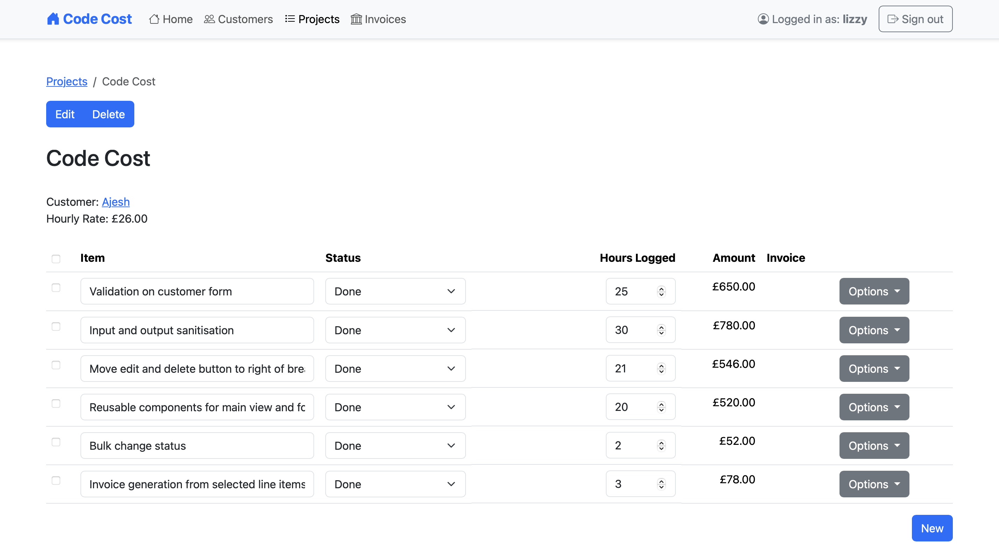
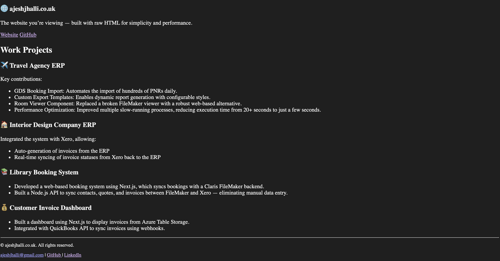

About Me
I build data-driven software systems that solve real-world business problems.
Claris FileMaker
Over the past 3+ years, I've worked extensively as a FileMaker developer, building and maintaining solutions across a range of industries, including:
- Travel & touring
- Interior design
- Point-of-purchase display design
Microsoft Azure
I've designed, built, and deployed multiple applications using Azure services such as:
- App Services
- Entra ID
- Azure AD B2C
- Storage Accounts
Web Development
I have built modern web portals and REST APIs using a mix of tools and technologies tailored to each project's needs.
Personal Projects

💻 Code Cost
A costing program for software development projects. It is built with PHP, HTMX and SQLite.
Website GitHub
🌐 ajeshjhalli.co.uk
The website you're viewing — built with raw HTML for simplicity and performance.
Website GitHubWork Projects
✈️ Travel Agency ERP
Key contributions:
- GDS Booking Import: Automated the import of hundreds of PNRs daily.
- Custom Export Templates: Enabled dynamic report generation for tours with configurable styles.
- Room Viewer Component: Replaced a broken FileMaker layout component with a robust web-based alternative.
- Performance Optimization: Improved multiple slow-running processes, reducing execution time from 20+ seconds to just a few seconds.
🏠 Interior Design Company ERP
Integrated the system with Xero, allowing:
- Auto-generation of invoices from the ERP
- Real-time syncing of invoice statuses from Xero back to the ERP
📚 Library Booking System
- Developed a web-based booking system using Next.js, which syncs bookings with a Claris FileMaker backend.
- Built a Node.js API to sync contacts, quotes, and invoices between FileMaker and Xero — eliminating manual data entry.
💰 Customer Invoice Dashboard
- Built a dashboard using Next.js to display invoices from Azure Table Storage.
- Integrated with QuickBooks API to sync invoices using webhooks.